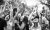
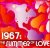

1967
1967 1 jan. Proklamerandet av de fyra huvudmålen för våra aktiviteter.
1) Fullbordandet av hjärtats inre fundament.
2) Fullbordandet av målet att fördubbla medlemsantalet genom fyra steg.
3) Fullbordandet av det ekonomiska fundamentet.
4) Betoning av systematisk organisering av aktiviteter.
Pamfletten "Revelation for a New Age," by Dr. Anthony Brooke publiceras.
28 mars Ekumenisk hearing.
17 apr. Studiemöten.
12 juni Hans grupp turnerar i Japan. (15 människor)
Judarna får tillbaka templet i Jerusalem genom "sex-dagas kriget" som utkämpades 5-10 juni 1967
Världen påverkas: Genom musiken längtar ungdomar efter fred, frihet och kärlek: "Summer of Love!"  


10 aug. återkomst till Korea.
29 aug. Ekumeniskt 'Vänskapsmöte för åldermän' (45 människor)
24 dec. Un Jin Nim föds. (23 nov. månkal.)
Sanne Fars 1:a 7 års-period avslutas.